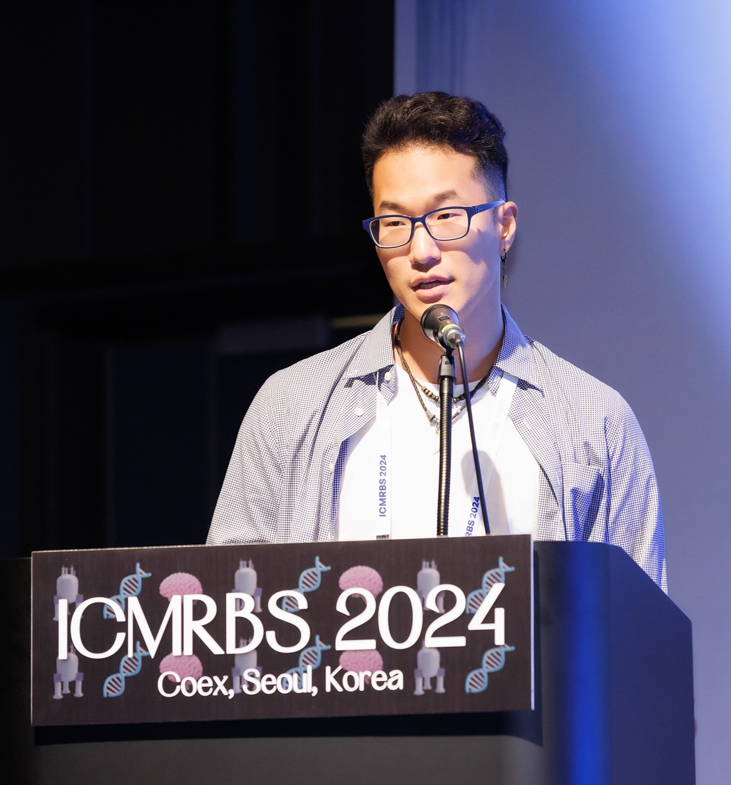

Ben Shin

Biochemistry PhD Candidate
About Me
I am a PhD candidate in Biochemistry and Biophysics at Imperial College London, working on the molecular mechanisms of functional amyloid aggregation. My research combines protein biochemistry, NMR spectroscopy, fluorescence methods, and computational analysis to study intrinsically disordered proteins and the early events that control amyloid self-assembly. I am particularly interested in protein disorder, biomolecular dynamics, and the use of integrated experimental and computational approaches to understand aggregation-prone systems.
I am currently seeking postdoctoral opportunities in protein biophysics, NMR spectroscopy, intrinsically disordered proteins, amyloid biology, and related areas. Outside the lab, I play baseball and enjoy developing my coding skills.
Technical Skills: Protein expression and purification, cloning, NMR spectroscopy, FCS, TIRF, ThT assays, Python, MATLAB, molecular dynamics, ODE fitting.